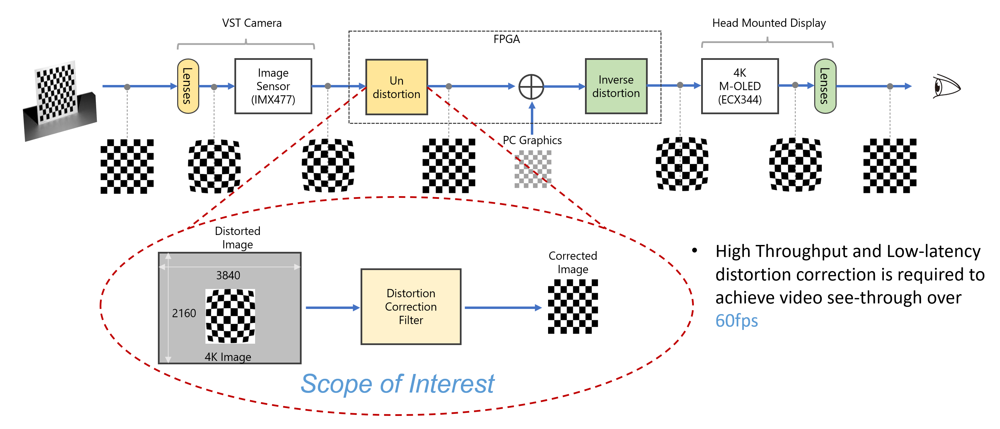
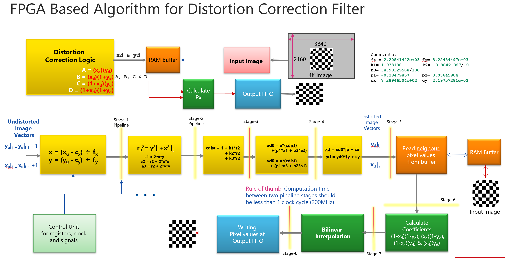
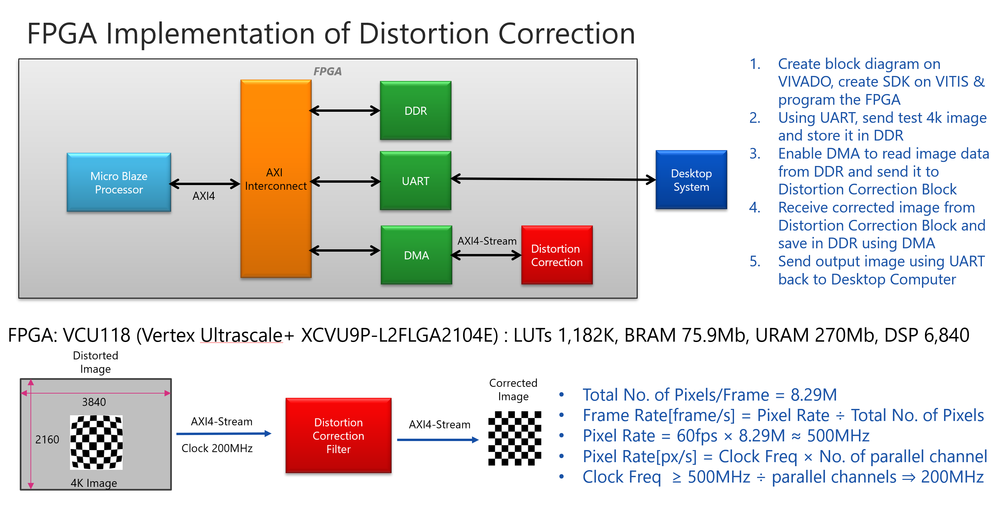
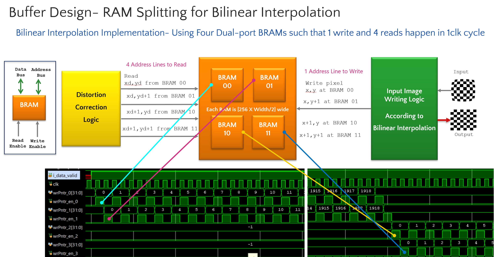

FPGA-Accelerated
Distortion Correction
Hardware-Accelerated Lens Correction for XR Headsets
Real-Time Lens Correction for Wearable XR
Hardware-accelerated lens distortion correction module for XR headsets. This project involved designing a pipelined FPGA architecture operating at 200 MHz to deliver 60 FPS correction with 60% lower power draw compared to GPU-based approaches — critical for battery-powered wearable devices.
VST Camera Pipeline

Full VST camera pipeline: Lenses → Image Sensor → FPGA Processing → Display
- High throughput and low-latency distortion correction is required to achieve video see-through over 60 FPS
- Scope of Interest: 4K Image (3840×2160) → Distortion Correction Filter → Corrected Image
8-Stage Pipelined Architecture

FPGA-based distortion correction filter with pipelined processing stages
- Distortion Correction Logic with polynomial equations
- RAM Buffer for input/output data management
- Calculate Pv block for pixel coordinate transformation
- Output FIFO for synchronized data output
- Rule of thumb: Computation time between two pipeline stages should be less than 1 clock cycle (200 MHz)
Pipeline Stages
VCU118 Development Platform

Block diagram: MicroBlaze Processor → AXI Interconnect → DDR/UART/DMA → Distortion Correction
FPGA Specifications
Board: VCU118 (Virtex UltraScale+ XCVU9P-L2FLGA2104E)
Implementation Steps
- Create block diagram on VIVADO, SDK on VITIS & program FPGA
- Using UART, send test 4K image and store in DDR
- Enable DMA to read image data from DDR and send to Distortion Correction Block
- Receive corrected image and save in DDR using DMA
- Send output image using UART back to Desktop
Performance Parameters
RAM Splitting for Bilinear Interpolation

Four dual-port BRAMs enabling 1 write and 4 reads per clock cycle
- Using four Dual-port BRAMs such that 1 write and 4 reads happen in 1 clock cycle
- Each BRAM is [256 × Width/2] wide
- 4 Address Lines to Read, 1 Address Line to Write
- Input Image Writing Logic according to Bilinear Interpolation requirements
Performance Benchmarks
Critical for battery-powered wearable XR devices, enabling high-fidelity video see-through with minimal latency and power overhead.